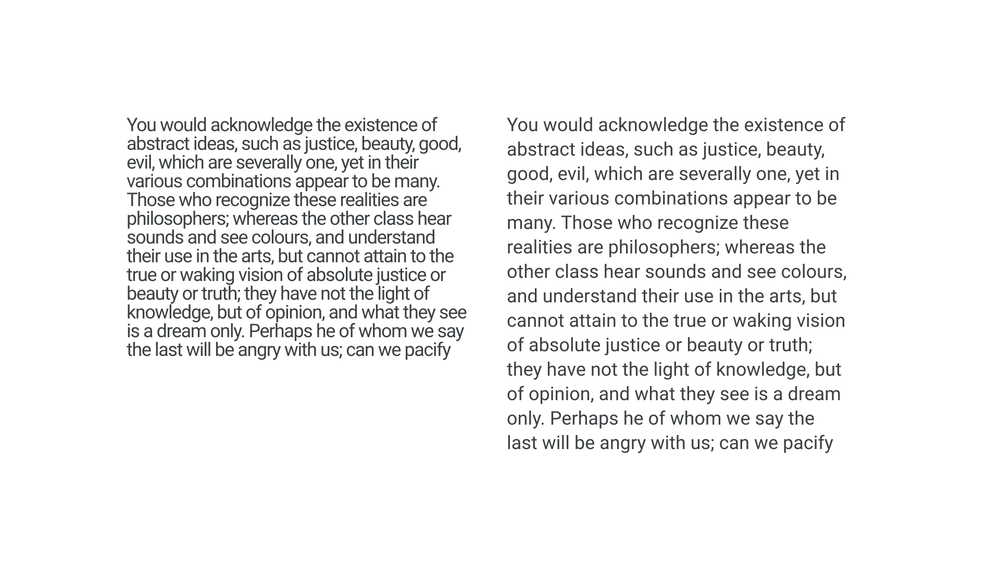

Readability
By Google Fonts Knowledge contributors · Google Fonts Knowledge.
Original article · Source on GitHub · CC BY-SA 4.0. Text, illustrations and existing credits reproduced from the licensed Knowledge repository. Open Shelf adapted the layout and links; these adaptations are also CC BY-SA 4.0. No endorsement implied.
Readability describes how comfortable it is for a person to engage with text created with legible type. Three factors determine readability: The person’s unique attributes (visual acuity, disabilities, and other health factors), what the text itself says, and the typography—both the choice of typeface and how it’s used. Readability should not be confused with legibility, although legibility does affect readability.

Readability can be influenced by how interesting the text is for the person reading it, how complicated the topic and the syntax are, whether or not it’s written in an engaging style, how frequently certain words appear throughout the text, and how legible the typeface used is. Typographic characteristics that can influence readability include font weight, character spacing, x-height, and line height.